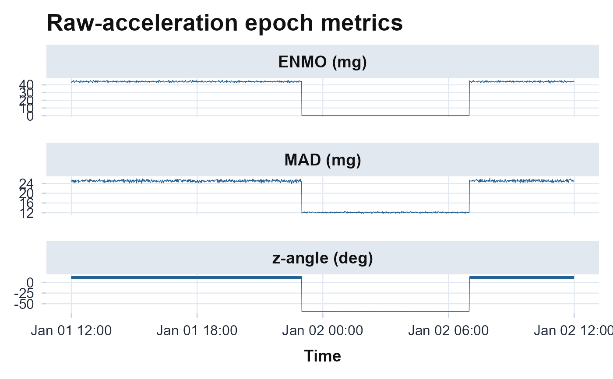

Plots the per-epoch ENMO, MAD, and z-angle from raw.metrics as a
faceted time series, a quality-control view of the gravity-preserving signals.
Returns a ggplot object and never errors.
Arguments
- x
A path to a raw file or a raw data frame (as in
raw.metrics).- epoch_length
Epoch length in seconds (default 60).
- ...
Passed to
raw.metrics(e.g.metrics,calibrate).
References
van Hees VT, Gorzelniak L, Dean Leon EC, Eder M, Pias M, Taherian S, Ekelund U, Renstrom F, Franks PW, Horsch A, Brage S (2013). “Separating movement and gravity components in an acceleration signal and implications for the assessment of human daily physical activity.” PLoS ONE, 8(4), e61691. doi:10.1371/journal.pone.0061691 .
Vaha-Ypya H, Vasankari T, Husu P, Suni J, Sievanen H (2015). “A universal, accurate intensity-based classification of different physical activities using raw data of accelerometer.” Clinical Physiology and Functional Imaging, 35(1), 64–70. doi:10.1111/cpf.12127 .
van Hees VT, Sabia S, Anderson KN, Denton SJ, Oliver J, Catt M, Abell JG, Kivimaki M, Trenell MI, Singh-Manoux A (2015). “A novel, open access method to assess sleep duration using a wrist-worn accelerometer.” PLoS ONE, 10(11), e0142533. doi:10.1371/journal.pone.0142533 .
Examples
# \donttest{
plot_raw_metrics(example_raw(days = 1))

# }